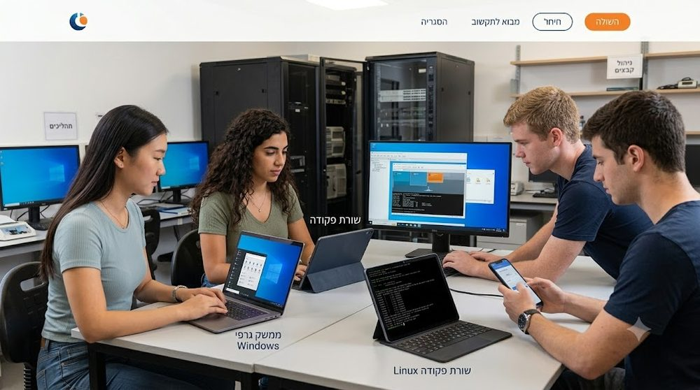

מה תפקידה של מערכת ההפעלה, איך היא מנהלת את החומרה, והשוואה בין המערכות הנפוצות. מסע בשלושה חלקים — מסוגי מערכות ההפעלה השונים, דרך ניהול זמן ואבטחה, ועד לאופן שבו מחשבים "מדברים" ביניהם. בחרו את ה-Gem המתאים לשלב שבו אתם נמצאים, וצפו במצגת המלווה.
